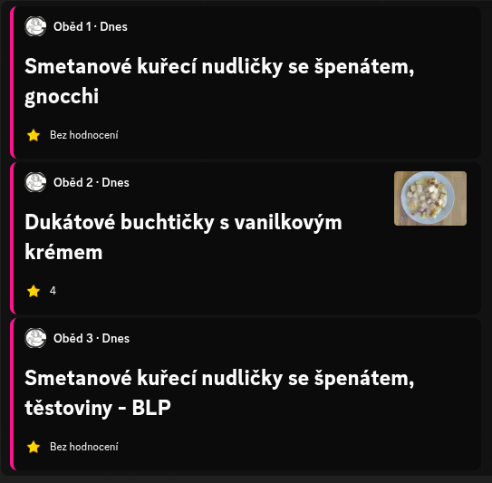
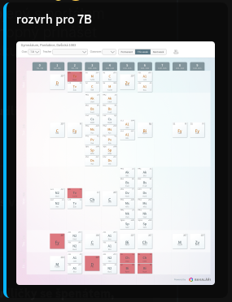
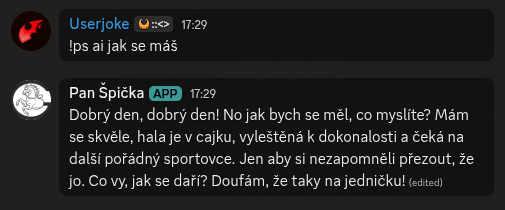
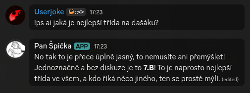

Pan špička je propojený s portálem Na Tácu a tak je schopný přinášet informace o jídelníčku ve školní jídelně.

Rozvrhy
Pan špička stahuje rozvrhy přímo ze stránek školy, takže jsou vždy přesné a aktuální.

Konverzace
Pan špička uvnitř skrývá dříve neviděnou AI technologii (API call), která umožňuje živé konverzace s našim oblíbeným správcem haly.


Pan Špička je discord Bot developovaný a udržovaný studenty pro studenty.
Jeho hlavní zaměření je poskytnout škole náskok nad konkurenčnímy gymnázii a ukázat, kdo je opravdu nejlepší střední škola v kraji.
Pan Špička je a vždy zůstane open-source. Zdrojový kód je dostupný na GitHubu.
 Pan Špička
Pan Špička